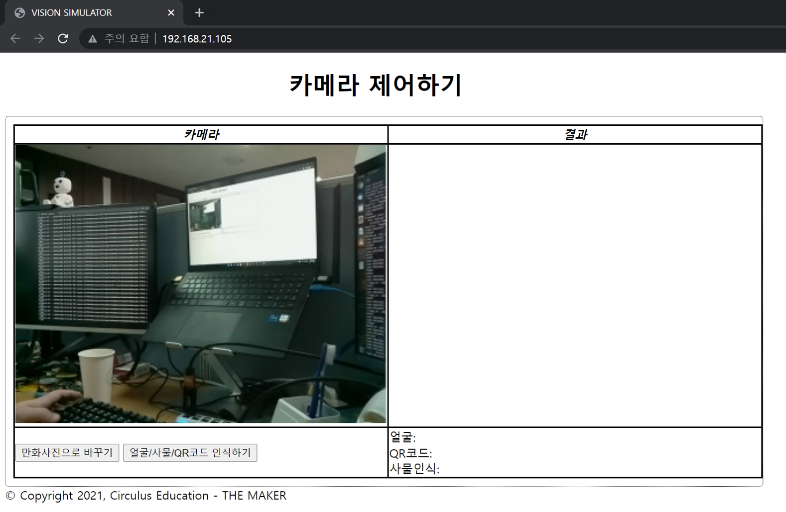
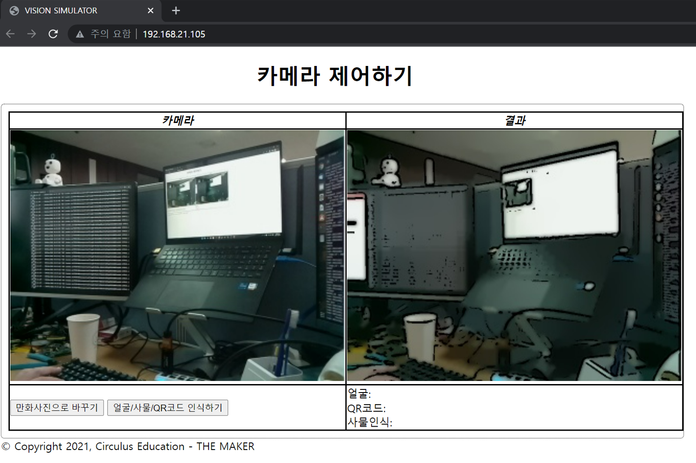
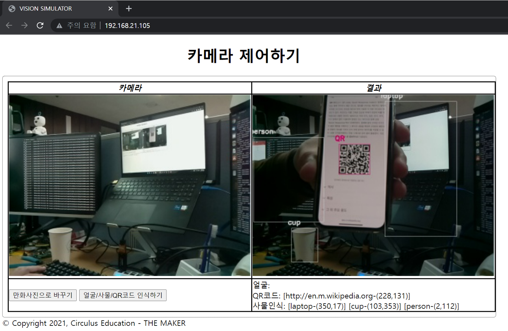
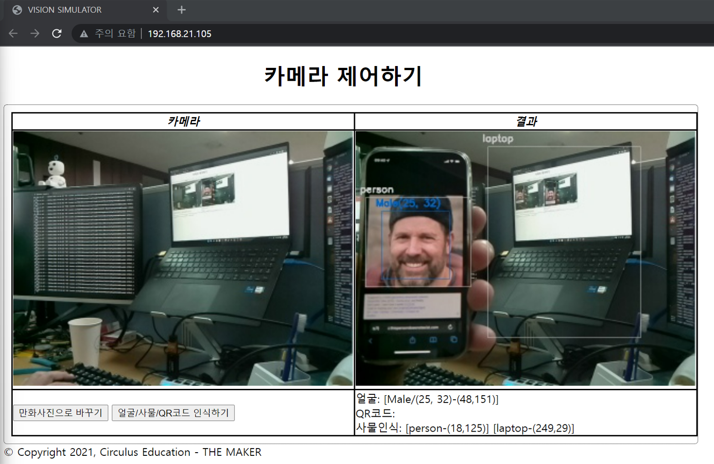

Vision Simulator
파이보의 Camera를 제어하고 컴퓨터 비전/인공지능을 이용한 기능을 확인할 수 있는 툴 입니다.
인터넷 브라우저가 필요합니다. (Chrome 브라우저 사용 권장)
사용 방법
$ cd ~/openpibo-tools/vision-simulator
$ sudo python3 main.py --port 8888
프로그램을 실행합니다.
--port: 연결할 포트를 입력합니다. 만약 설정하지 않으면, 기본 포트는80입니다.이후 인터넷 브라우저에서
http://<PIBO IP>:<PORT>에 접속합니다. (80은 생략 가능)Ex1) PIBO IP: 192.168.1.10 / PORT: 8888 > http://192.168.1.10:8888
Ex2) PIBO IP: 192.168.1.20 / PORT: 80 > http://192.168.1.20:80 or http://192.168.1.20
프로그램이 실행되면, 카메라 영역에 영상이 표시됩니다.

만화사진으로 바꾸기 버튼을 클릭하면 결과 영역에 만화화 된 이미지가 표시됩니다.

얼굴/사물/QR코드 인식하기 버튼을 클릭하면 결과 영역에 인식된 결과 이미지와 값이 표시됩니다.

